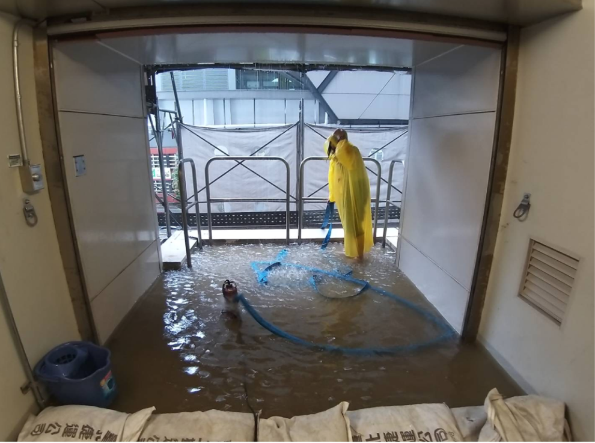
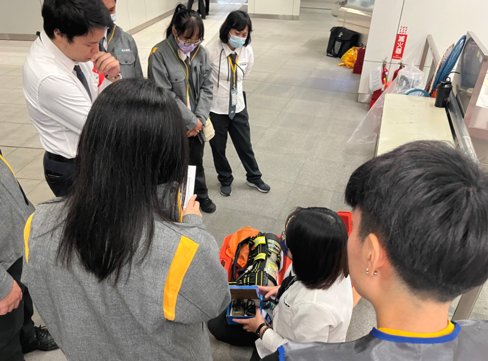

主要職責
運務員主要負責車站、月台與捷運駕駛的大小事情。運務員的主要職責包括確保乘客的安全，確定車站的運作正常。
下面將會深入說明運務員忙碌的一天。
一日行程
早班
- 6:30 交接 - 開始一天的活動！
- 7:00 尖峰時段
- 9:00 尖峰結束輪休
- 10:30 車站巡檢、臨時性調查
- 12:00 吃東西
- 13:00 例行性作業、每日例行表單回覆
- 14:00 下班交接
小夜班
- 14:20 交接 - 開始工作了
- 15:00 車站巡檢
- 16:00 輪休
- 17:00 晚尖峰時段
- 19:00 吃東西
- 20:00 例行性作業、臨時性調查
- 21:00 每日例行表單回覆
- 22:00 下班交接
大夜班
- 22:00 交接上工
- 23:00 每日例行表單回單回覆
- 00:00 末班車及車站關門作業
- 01:00 夜間廠商進場
- 02:00 廠商離場檢查作業
- 03:00 車站巡檢
- 04:30 夜間巡軌
- 05:45 車站開門作業
- 06:30 下班交接
夜間作業補充

車站定時需將自動售票機內之鈔票及硬幣進行抽桶、數幣處理作業

維修廠商進場施作依排程需下軌架設短路夾管控門禁及離場巡檢作業

夜間巡軌作業慢速巡檢軌道是否有遺落物品維護行車安全狀況
Questions
Q1 車站可能會遇到哪些緊急事故？
1.行車運轉異常狀況：像是旅客按到對講機、異物卡住車門等等，行控中心會請運務員上車確認狀況，並進行異常狀況處理程序。

2.電梯及電扶梯異常：當電扶梯異常停機 / 旅客自行按壓緊急停機鈕，詢問處收到警訊，運務員需至現場確認狀況，有旅客受傷需送醫就診，車站進行簡易包紮、CPR等處理。

3.車站發生火警訊號：確認月台大廳是否無煙無火，回報行控確認列車可以正常行駛至車站。(另確認電梯扶梯是否有人受困跌傷。)

Q2 會不會遇到旅客有票證或其他事務的問題呢？
會！ 比較常有加值、設定都會通、販售優惠單程票或者事情詢問、遺失物查詢等。有時候也會遇到車站設備異常，我們就要簡易排除問題(例: 自動售票機、閘門)
如果有視障 / 輪椅旅客或者團體旅客到來，我們也需要主動去引導他們。此外，還有一些比較罕見的事情，像是淹水的時候，我們就要去堆沙包和抽水

Q3 平常會不會有緊急情況的教育訓練呢？
有的，我們為了提升安全意識，一直在努力。
像是我們有火災、急救、防颱防洪等等的訓練。我們會做火警程序演練，實際操作急救設備等等實際導向的練習。
在防汛期會進行防颱防洪設備溫故實地操作訓練
(下圖為空氣呼吸器介紹)
